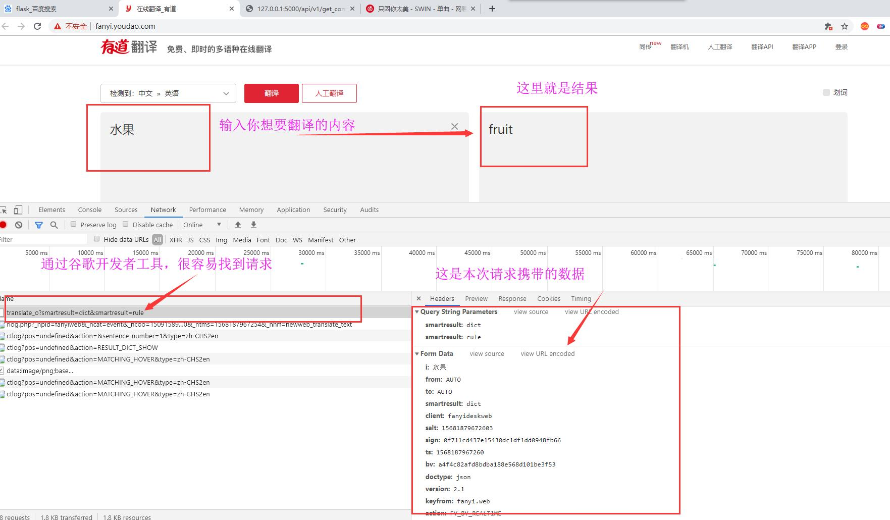
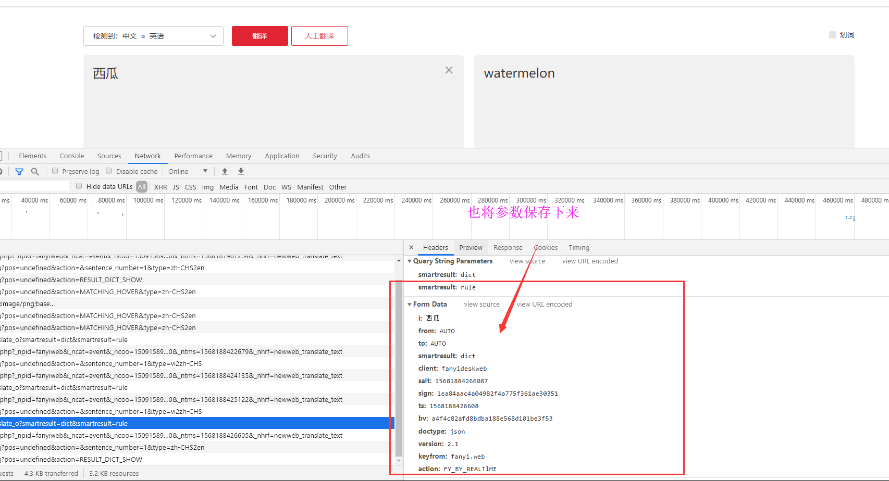
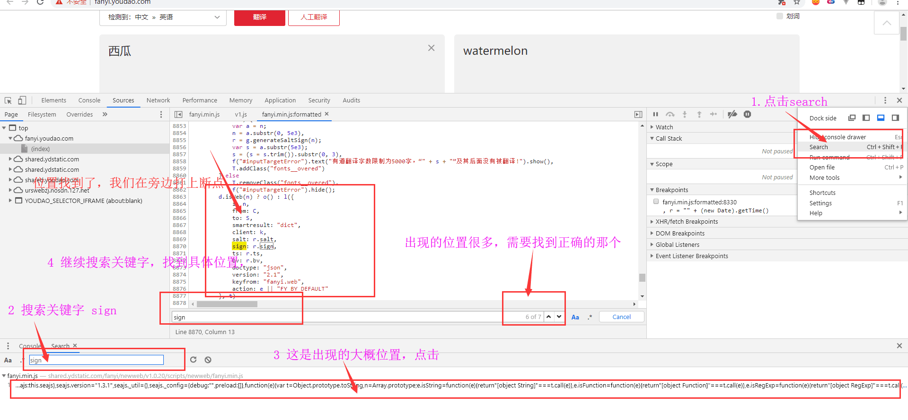
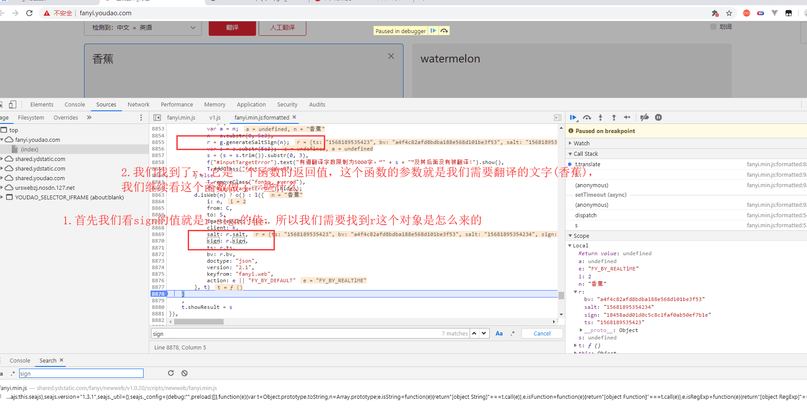
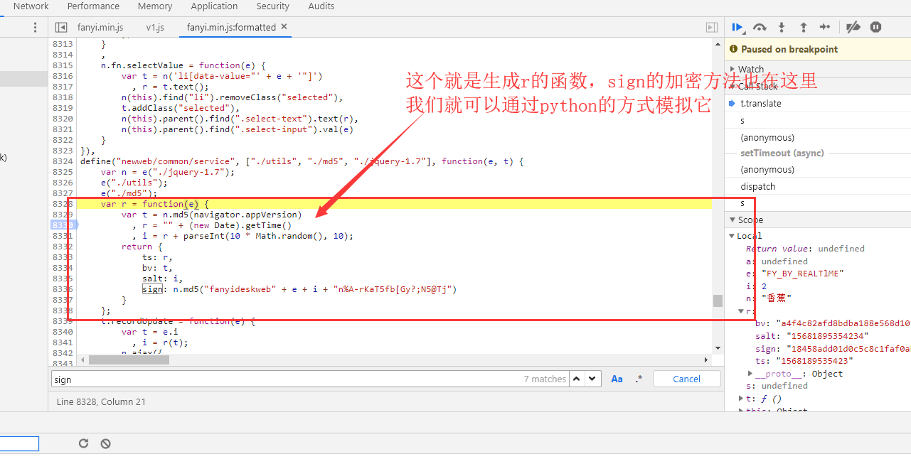
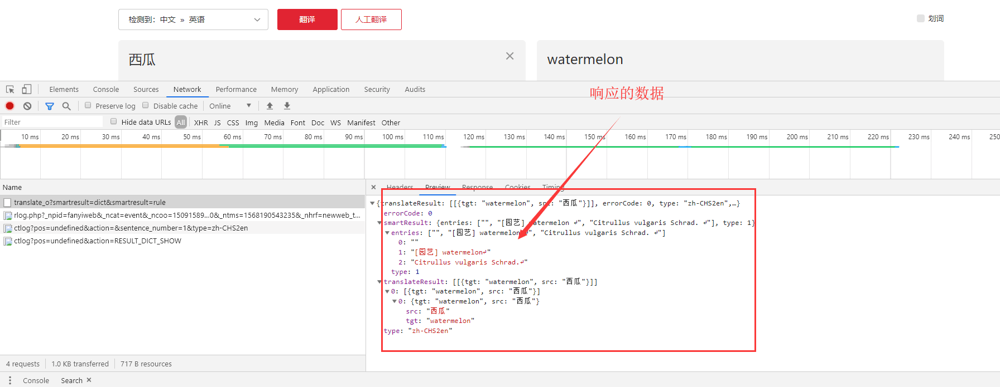

这是本地爬取的网址：http://fanyi.youdao.com/
一、分析请求
我们在页面中输入：水果，翻译后的英文就是：fruit。请求携带的参数有很多，先将参数数据保存下来，做一个记录。

我们再输入一个新的词：西瓜

i: 西瓜
from: AUTO
to: AUTO
smartresult: dict
client: fanyideskweb
salt: 15681884266087
sign: 1ea84aac4a04982f4a775f361ae30351
ts: 1568188426608
bv: a4f4c82afd8bdba188e568d101be3f53
doctype: json
version: 2.1
keyfrom: fanyi.web
action: FY_BY_REALTlME
i: 水果
from: AUTO
to: AUTO
smartresult: dict
client: fanyideskweb
salt: 15681879672603
sign: 0f711cd437e15430dc1df1dd0948fb66
ts: 1568187967260
bv: a4f4c82afd8bdba188e568d101be3f53
doctype: json
version: 2.1
keyfrom: fanyi.web
action: FY_BY_REALTlME对比一下，这两次请求携带的数据哪些参数不一样：很容易看出i,salt,ts,sign这四个参数是不一样的。i:就是你需要翻译的词，ts的话应该能够猜到是时间戳,salt他就是ts参数后面加了一个数字对吧。现在的话，我们就差sign的参数不知道是什么了吧。它是32位的数据，不出意外的话应该就是md5加密字符串了。
二、加密参数破解
就差sign不知道是怎么生成的，那就以sign为关键字，进行搜索就好。看看它出现的位置。

打好断点之后，我们在换个词进行翻译:香蕉


加密函数我就不解释了，navigator.appVersion就是浏览器的user-agent
def get_encrypt_data(keyword):
t = "5.0 (Windows NT 10.0; WOW64) AppleWebKit/537.36 (KHTML, like Gecko) Chrome/72.0.3626.121 Safari/537.36"
bv = hashlib.md5(bytes(t, encoding="utf-8")).hexdigest()
ts = str(int(round(time.time(), 3) * 1000))
salt = ts + str(random.randint(1, 10))
sign = hashlib.md5(
bytes("fanyideskweb" + keyword + salt + "n%A-rKaT5fb[Gy?;N5@Tj", encoding="utf-8")).hexdigest()
return ts, bv, salt, sign三、成功响应:

import requests, time, random, hashlib
from fake_useragent import UserAgent
ua = UserAgent()
url = "http://fanyi.youdao.com/translate_o"
headers = {
"User-Agent": ua.random,
"Referer": "http://fanyi.youdao.com/",
}
s = requests.Session()
def get_encrypt_data(keyword):
t = "5.0 (Windows NT 10.0; WOW64) AppleWebKit/537.36 (KHTML, like Gecko) Chrome/72.0.3626.121 Safari/537.36"
bv = hashlib.md5(bytes(t, encoding="utf-8")).hexdigest()
ts = str(int(round(time.time(), 3) * 1000))
salt = ts + str(random.randint(1, 10))
sign = hashlib.md5(
bytes("fanyideskweb" + keyword + salt + "n%A-rKaT5fb[Gy?;N5@Tj", encoding="utf-8")).hexdigest()
return ts, bv, salt, sign
def param():
dic = {}
dic["i"] = keyword,
dic["from"] = "AUTO",
dic["to"] = "AUTO",
dic["smartresult"] = "dict",
dic["client"] = "fanyideskweb",
dic["doctype"] = "json",
dic["version"] = "2.1",
dic["keyfrom"] = "fanyi.web",
dic["action"] = "FY_BY_REALTlME",
dic["ts"], dic["bv"], dic["salt"], dic["sign"] = get_encrypt_data(keyword)
return dic
if __name__ == '__main__':
re = s.get("http://fanyi.youdao.com/", headers=headers)
keyword = input("输入你想翻译的内容>>>:").strip()
response = s.post(url=url, data=param(), headers=headers)
msg = response.json().get("translateResult")[0][0]
print('''翻译内容>>>:{}
翻译结果>>>:{}'''.format(msg.get("src"), msg.get("tgt")))